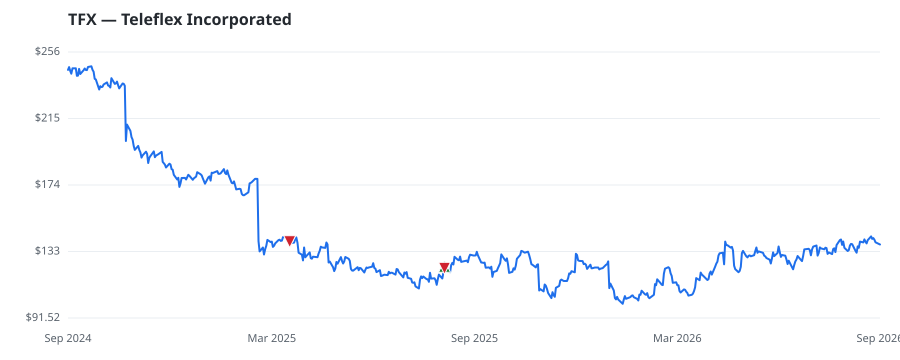

bullish · bearish · n/a — dots: price>SMA10 · SMA10>SMA50 · SMA50>SMA200 · up>down volume (20d)
Health Care Equipment & Services · mid cap · ★ 1 buyer(s) sit on a committee that regulates this industry
Members who bought TFX earned a dollar-weighted +0.0% from their disclosure dates, versus +0.0% for the S&P 500 over the same holding windows (+0.0% alpha).

▲ green = a disclosed purchase · ▼ red = a disclosed sale (plotted on disclosure date)
Teleflex Inc is a provider of medical technology products focused on enhancing clinical benefits, improving patient and provider safety and reducing total procedural costs. It designs, develops, manufactures and supply medical devices used by hospitals and healthcare providers supporting high-acuity emergent procedures. The company has three reportable segments: Americas, EMEA (Europe, the Middle East and Africa) and Asia (Asia Pacific). It derives maximum revenue from Americas. Its products includes: Anaesthesia, Emergency Medicine, Interventional Cardiology/Radiology, Interventional Urology SURGICAL & MEDICAL INSTRUMENTS & APPARATUS · website
| Revenue | $2.0B | Net income | $-905.6M |
|---|---|---|---|
| Operating income | $118.4M | Diluted EPS | $-20.25 |
| Assets | $6.9B | Equity | $3.1B |
| Member | Chamber | Out-performer | Disclosed buys $ | Return on buys |
|---|---|---|---|---|
| Lisa McClain ★ | house | — | $8K | +0.0% |
Disclosed $ figures are bracket midpoints — filings report ranges (e.g. $1,001–$15,000), not exact amounts.
This name produced 0.0% of the ranked funds’ total alpha.
| Fund | Fund alpha vs SPY | Position | % of book |
|---|---|---|---|
| Sessa Capital IM, L.P. | +44% | $193M | 3.3% |
| ABRAMS BISON INVESTMENTS, LLC | +35% | $101M | 4.9% |
Hedge data: SEC EDGAR 13F · ranked funds beat SPY in >50% of their quarters · fund alpha = mirror-portfolio return minus SPY.